從IDEA轉移至Eclipse
由奢入儉難，就該先學開源免費的工具
背景
- 進了公司才發現沒有買IDEA，既然下定決心要做長期的，只能一切重來了
下載
- 直接下載Spring Tools 4 for Eclipse: https://spring.io/tools
- 這玩意就是包好的Eclipse，然後針對spring有優化
- 下載回來會是一個.jar，執行它就會解壓縮成資料夾，點進去裡面
SpringToolSuite4.exe就是開啟了
JDK設定
- 這個.ini裡面的vm是for Eclipse本身(Eclipse是用java寫的)，不要去改它，就用它自帶的就好，否則太低版本會啟動不了
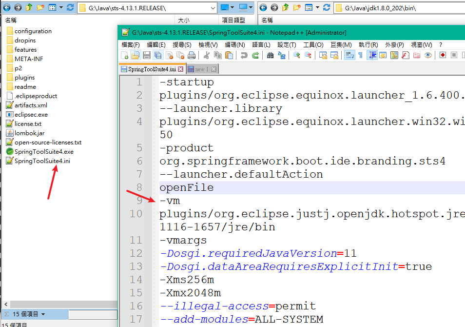
- 專案裡面用的jdk版本那是另一回事，可以按
alt+enter查看專案設定
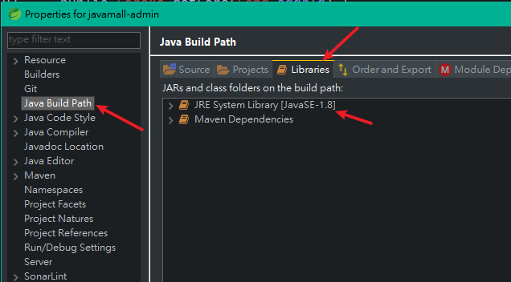
- 設定從這邊進去
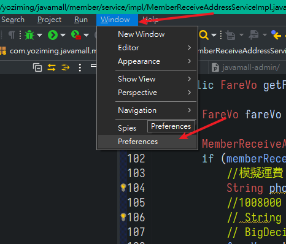
- 在這裡選定預設的JDK版本
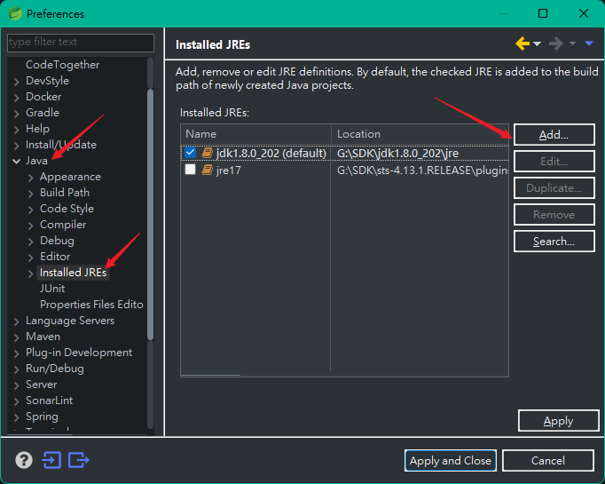
插件
- 這邊可以安裝插件，有些插件還要選安裝範圍、還要按同意、總之挺麻煩的
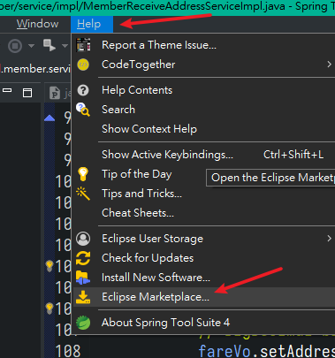
- 透過這個內建的瀏覽器去開市集、安裝、移除插件都慢得離譜(好像是因為每次打開他都會下載整個清單)
- 還不如直接用瀏覽器開啟網站 https://marketplace.eclipse.org/
- 用拖曳的就可以安裝，把排名靠最前的都裝一裝基本不會錯
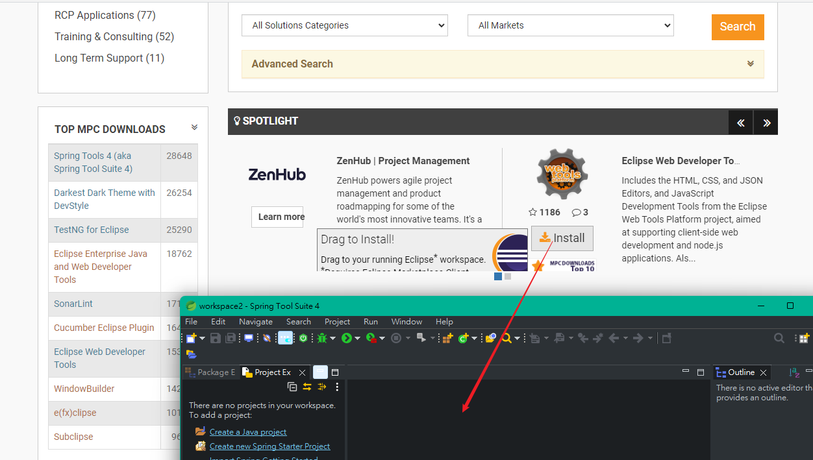
DevStyle
- 提供好看的主題，並且可以改成自己習慣的配色
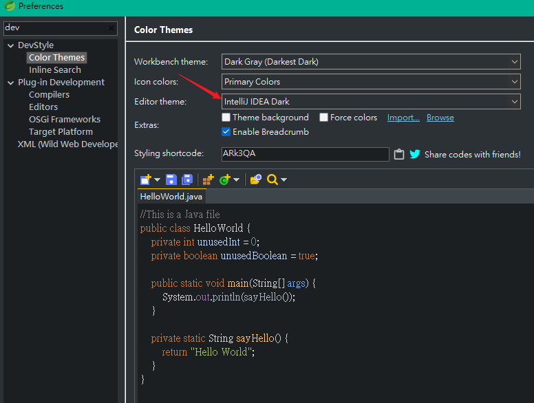
編碼
- 需要手動設定成
UTF-8
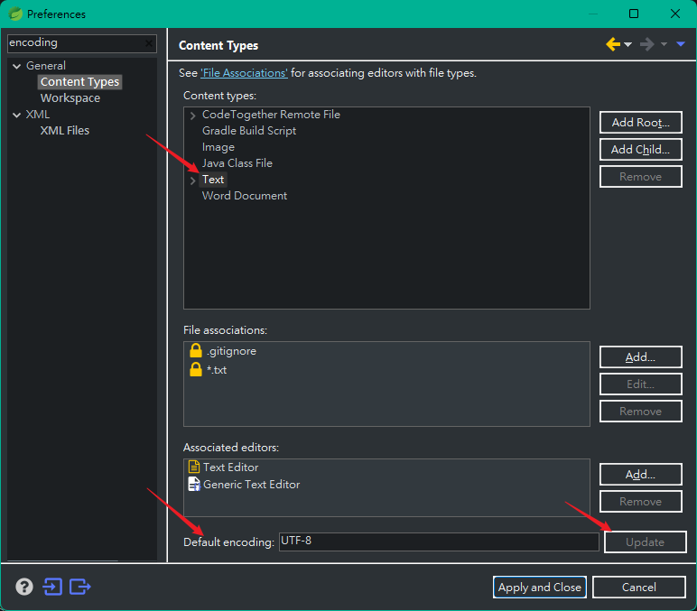
- 還有其他各種奇奇怪怪的地方也都要改，以及XML等等
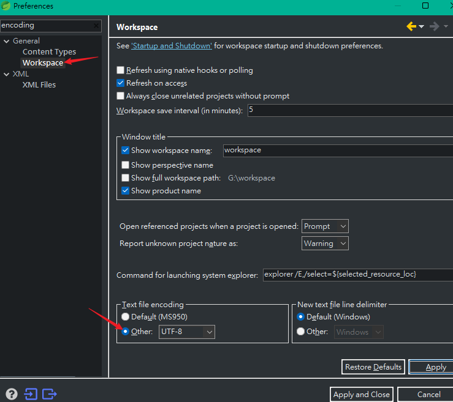
改字型
- 超麻煩，需要一個一個點開然後修改
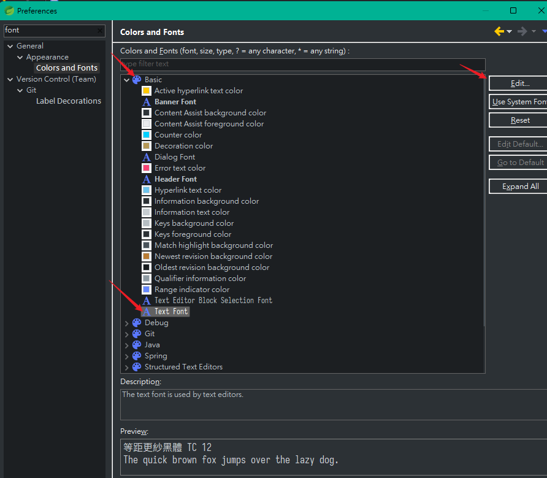
console
- 這個不改，執行前就會一直跳出警告，既然他說buffer最好要1000000，那一開始何必設80000，真的是有病
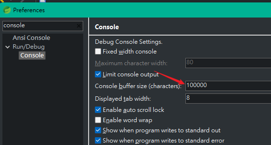
自動補完
- Eclipse預設只對
.起反應 - 搜尋
Content Assist，手動把所有字都加進去
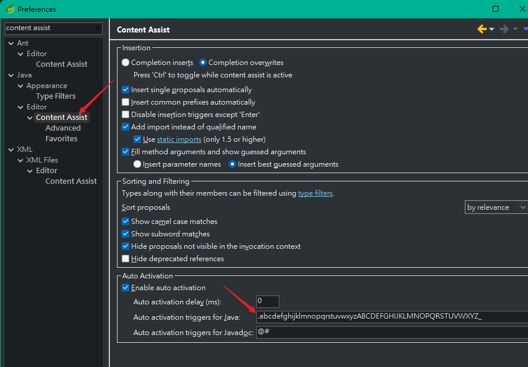
- 另外IDEA中自動補完的
Tab在這裡變成alt+/，如果延遲設成0就不用按，直接用方向鍵上下選，然後enter套用(蠻難用的，不像IDEA一個Tab走天下) - 但是這樣會出事，因為它很蠢的連按
空格跟;都會自動選用補完的第一順位，導致超級難用，需要根據個人習慣的速度，像我設定延遲500毫秒
改檔案瀏覽器
- 路徑改成樹狀顯示(預設是Flat，這個相當於.properties與.yml的顯示區別)
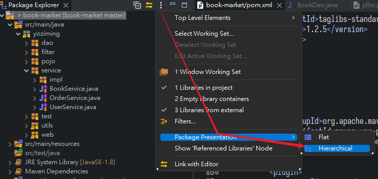
- 順帶一提，不小心按到x關掉，到show view把它開出來
- 如果按Detach到變成獨立視窗、或是跑到奇怪的位置等等都可以直接"按住拖曳"來改變視窗的擺設樣式
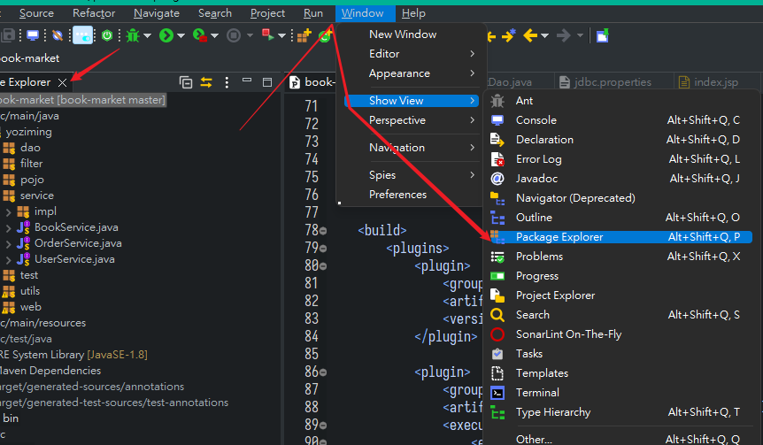
-
如果是單純想看檔案那Project Explorer更好用一點，因為Package Explorer是針對Java專案的，而Project Explorer可以查看所有檔案(例如web projects或其他語言寫的東西)，並且可以比較進階的自訂過濾
-
例如我只想要他做為一個單純的檔案總管，就勾成這樣
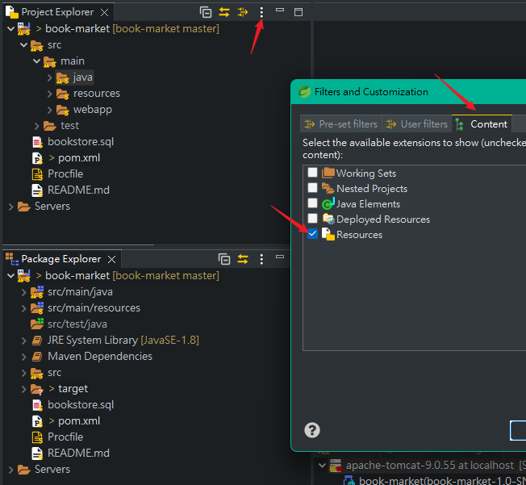
- 覺得Explorer裡面字小到脫窗的話在這裡改
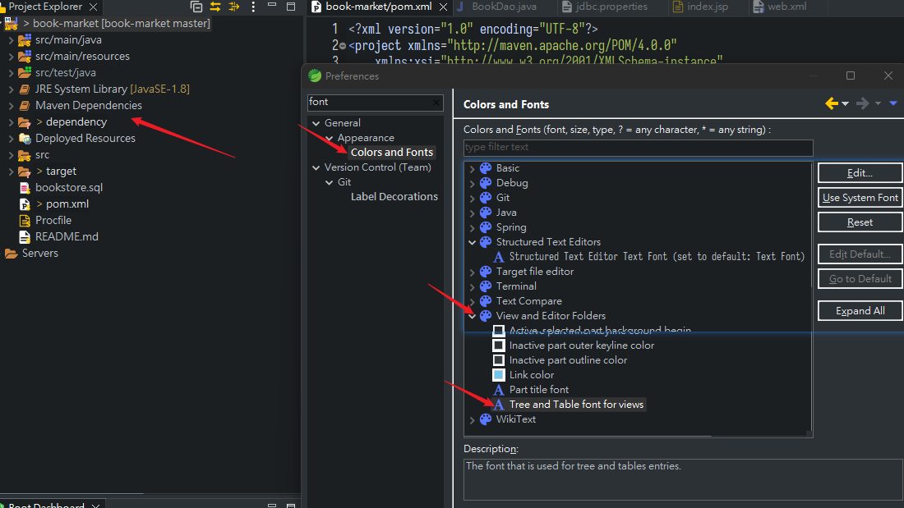
點xml開成奇怪的表格
- Eclipse會用一些奇怪的樣子開啟檔案，總之進到關聯設定，自己添加
*.副檔名，然後修改預設開啟的規則

多游標與多選
VS code跟IDEA中超級基本的功能在這邊竟然沒有
- 預設只有超難用的
alt + shift + A然後按住滑鼠拉一條直線 - 這個插件有解
- https://github.com/EliMirren/Eclipse-Multiple-Cursor/releases/tag/1.0.1
其他對應操作
- 根據返回值建立本地變數，IDEA中的
.var變成Ctrl+2然後L
部署Tomcat
-
pom.xml第一行報錯**org.apache.maven.plugin.war.util.WebappStructure** -
原因是maven-war-plugin版本太老，加入
<plugins>
<plugin>
<groupId>org.apache.maven.plugins</groupId>
<artifactId>maven-war-plugin</artifactId>
<version>3.3.1</version>
</plugin>
- 先新增用來執行的Server
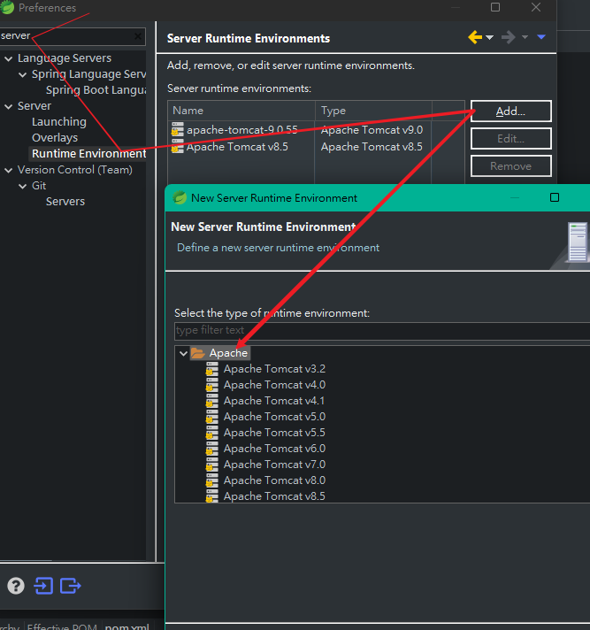
- Eclipse很嚴格，JDK8就必須要用Tomcat9，好在安裝還是比較方便的，這邊可以直接下載，自己選擇要放的路徑，以及對應的JDK
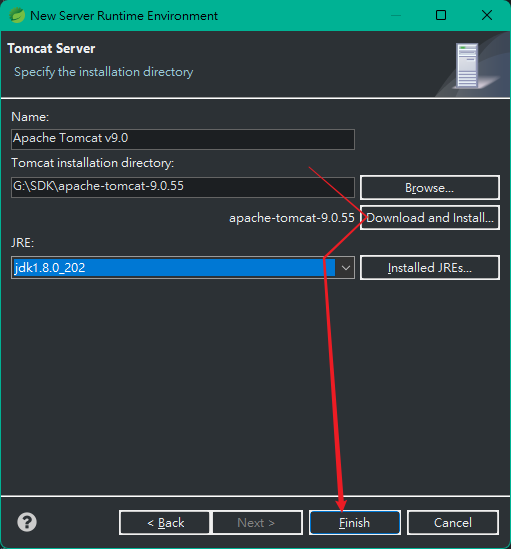
- 新增完之後，到Server視窗查看，如果沒有就從View新增，搜尋
Server就會看到
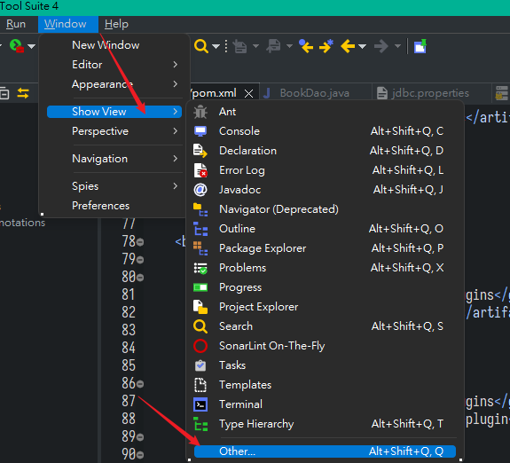
- 將專案加入至Server，這一步驟相當於IDEA在run裡面添加Tomcat Server之後會跳出一個找不到Artifacts的警告，點Fix自動關聯的那一個步驟
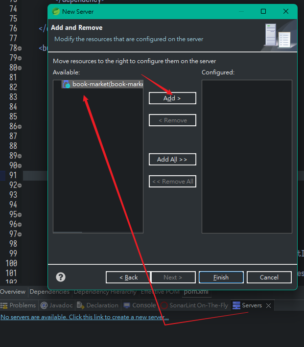
- 只要你的專案確實是一個可執行的web專案就可以執行，有時候修改了Maven他不像IDEA會自動更新，需要update一下(相當於讓專案重新建構)
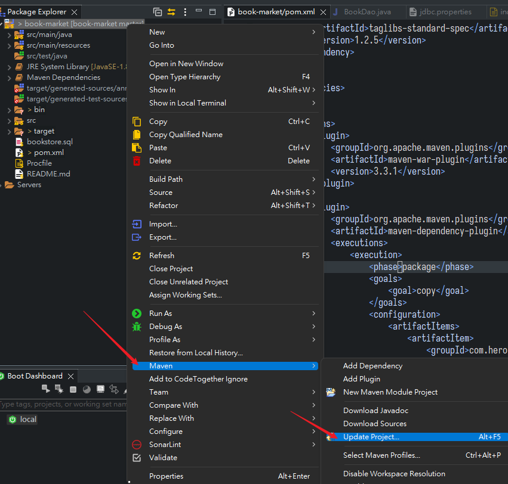
- Server啟動後預設訪問的網址就是專案的名稱，例如我這個就是訪問
http://localhost:8080/book-market/
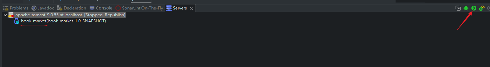
小結
- 暫時放棄Eclipse，效率實在太低了，很多方便的插件都沒有，改用IDEA CE版本，社群版是阿帕契2.0授權，可以用於商業環境，然而閹割掉很多功能
- https://www.jetbrains.com/idea/download/#section=windows
- 但神通廣大的網友還是做出插件可以一定程度還原終極版的操作，主要是intellij-spring-assistant與smart-tomcat
- 其實用來做一般的後端開發已經很OK了，主要是我這個工作還有涉及JSP的部分，而社群版不支援Java EE，也就是JavaWeb部分幾乎只有文字編輯器的功能，苦也，先試著用用看
- 個人打包好的設定檔與插件集合:
- https://drive.google.com/file/d/1qOwZVWXO3kGv1sXv-80VM0h4ciU9QWl9/view?usp=sharing
上次修改於 2022-02-24